S
1
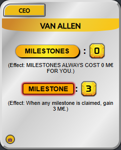
92
VanAllen
A
3
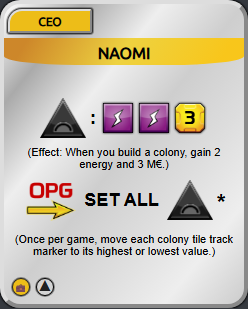
82
Naomi
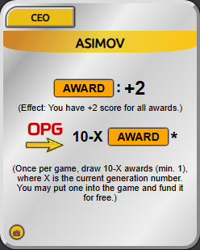
80
Asimov
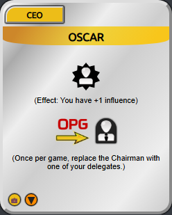
80
Oscar
B
9
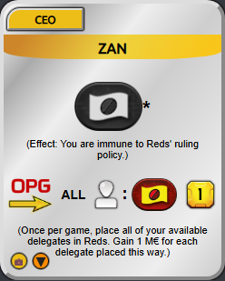
78
Zan
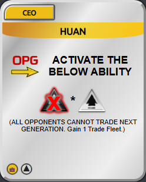
75
Huan
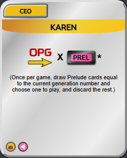
73
Karen
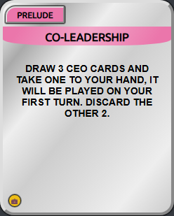
72
CoLeadership
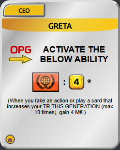
72
Greta
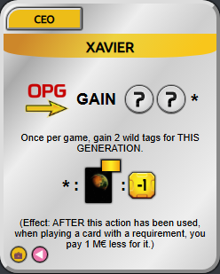
72
Xavier
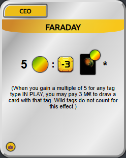
70
Faraday
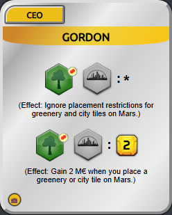
70
Gordon
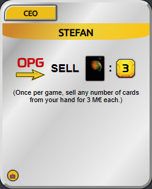
70
Stefan
C
14
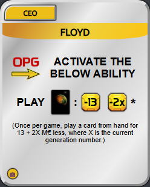
68
Floyd
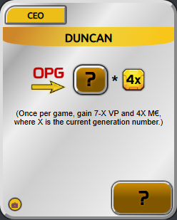
65
Duncan
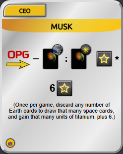
65
Musk
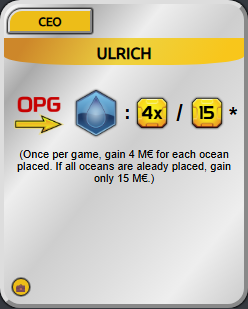
65
Ulrich
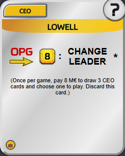
62
Lowell
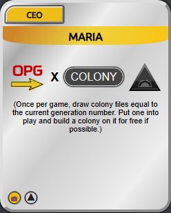
62
Maria
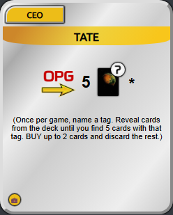
61
Tate

60
Ingrid
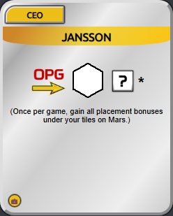
60
Jansson
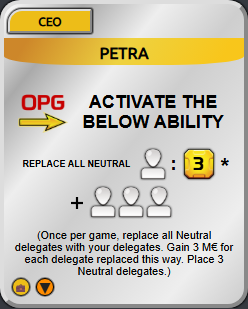
60
Petra
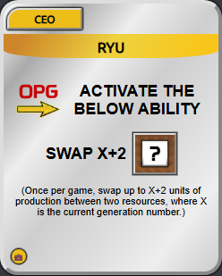
58
Ryu
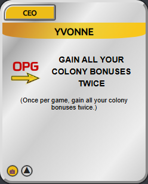
56
Yvonne
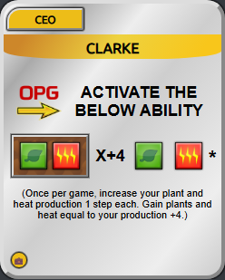
55
Clarke
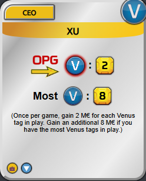
55
Xu
D
9
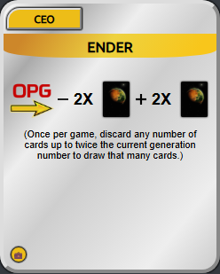
52
Ender
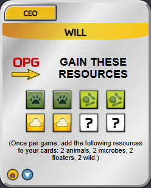
52
Will
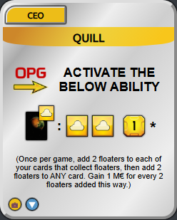
48
Quill
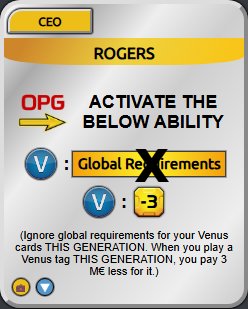
48
Rogers

45
Bjorn
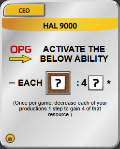
45
HAL9000
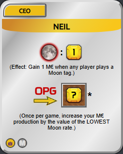
45
Neil
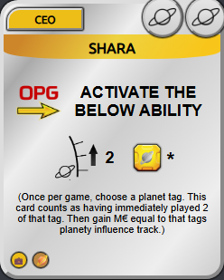
42
Shara
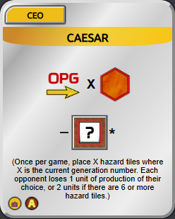
35
Caesar
F
2
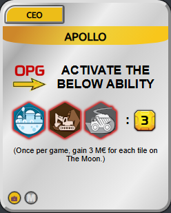
30
Apollo
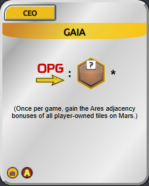
28
Gaia